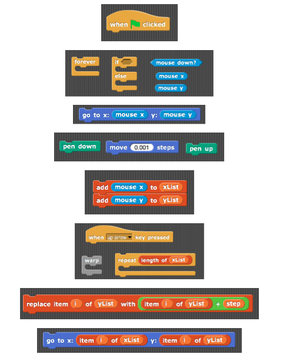
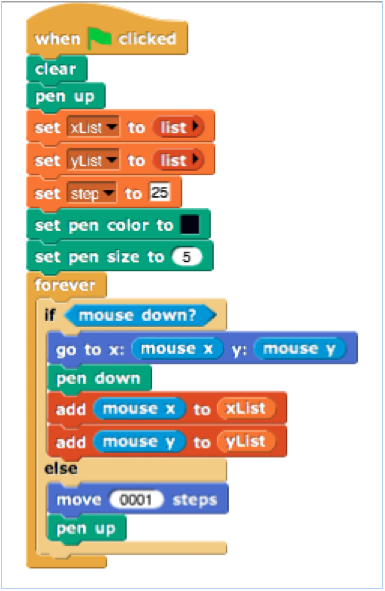
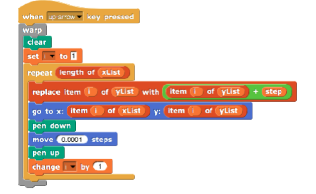
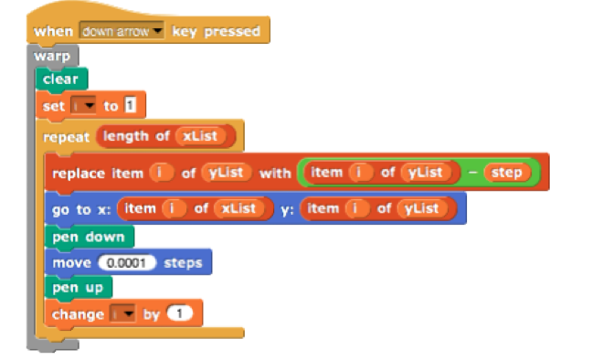
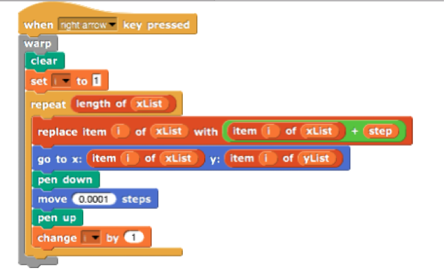
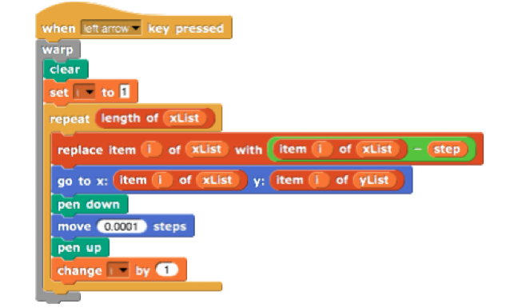
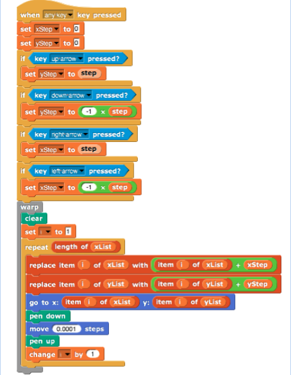

Project: Simple Studio for Character Design & Animation (pdf version) Curriculum Topic: Lists and simple list operations
Recap: Lists are data structures which are very useful if you have many items in some order that you wish to keep track of. Lists come in especially handy when you don't know ahead of time how many items you will have to keep track of.
Project Summary: In this project we will create a simple studio for designing and animating a character. The user will be able to draw a character with the mouse. We will use lists to store the mouse locations visited during the drawing. Then the character drawn will be given motion using the up/down right/left arrow keys.
1. Watch the introduction video. Discuss with your partner the purpose and details of the project.
2. Play with the Snap! program linked here to get a feel how the "Simple Studio" program works and how the character is moved around. Please do not look at the code.
3. Discuss with your partner how would you design such a project. Be sure to explore what data needs to be tracked and how lists can be employed to keep track of this data.
4. If you need hints to get started try to answer the following questions:
What initiates the drawing of the character?
How can you access the location of the mouse as it is moved around? (Hint: Sensing menu)
How can you make a drawing based on the mouse positions? (Hint: Pen menu)
How can you store the x and y positions of the mouse as the drawing is created?
Do we know ahead of time how many locations the user's mouse will visit while drawing?
Why is remembering the order of these locations important?
What data structure is called for? How many of these would be handy? Why?
What ends the drawing phase?
What should happen when each of the following keys are pressed: up, down, right, left?
How should the location information stored in the lists be updated to accomplish these movements?
How should the revised drawings be created based on updated locations?
If you need more hints, here are some code blocks that may be handy:

5. If you get stuck watch the video discussing the hints.
6. Start coding in Snap! Many things will clear up when you actually get to work.
7. If you get stuck, watch the videos on the drawing phase and the animation phase.
8. Submit your project to your teacher by the given deadline.
9. Discuss with other groups how they went about the project.
10. Brainstorm with your partner about some possible extensions and bonus explorations of the project.
Here are some possible suggested extensions:
Can you revise your code so that a single list (a list of lists) keeps track of the mouse x & y location information?
Can you revise your code so that all the arrow key inputs (up/down/right/left) are processed together in a single procedure?
Can you add background image(s) to your character animation? Can you add music to your character animation?
Can you give the user options (such as color, pen thickness, etc.) in the drawing phase?
Can you allow for other types of character animations: rotate, flip, shrink/enlarge?
Research about advanced character design and animation studio software in the market, such as Maya 3D, Unity 3D etc.
Research about Pixar Animation Studios. How did they start? How do they work? Learn about the internship opportunities they offer.
Purpose of Project:
This project aims to explore concepts related to "Lists" in a hands-on and fun manner. Most students enjoy drawing and almost all are fascinated by the animated works of studios like Pixar. This project hopes to bring home the idea of using lists to store and transform data. It also hopes to be a first stepping stone to more advanced character design and animation techniques students may pursue in the future.
Time Commitment:
About 4 days.
First day: Watching the introduction video, playing with the Snap! program provided and starting the project design in partner groups.
Second day: Coding. Using the hint questions, and Hints video as needed.
Third day: Finishing the project, exploring some extensions. If stuck, watching the step-by-step videos of the Drawing and Animation phases.
Fourth day: Exploring more extensions and bonus opportunities. Catch up day for those really behind. Classroom sharing.
Tips:
Be sure to do this lab and some of its extensions on your own prior to introducing it to the students.
Make sure that, while playing with the Snap! program to understand the project, students are not accessing the code. (Hopefully UC Berkeley folks will soon create such a capability: to use a program without access to the code.)
Make sure that, students spend a good amount of time coming up with their own design ideas prior to reading the hints questions and watching the Hints video.
Make the step-by-step solution videos on the Drawing and Animation phases available only to students who are really stuck.
Encourage the students who are ahead of schedule to come up with their own extensions prior to reading suggested extensions.
Correlation with AP CS Principles Framework:
EU 5.1 Programs can be developed for creative expression, to satisfy personal curiosity, to create new knowledge, or to solve problems (to help people, organizations, or society).
LO 1.2.2 Create a computational artifact using computing tools and techniques to solve a problem.
EK 5.1.3B Collaboration facilitates multiple perspectives in developing ideas for solving problems by programming.
EK 5.3.1L Using lists and procedures as abstractions in programming can result in programs that are easier to develop and maintain.
Possible Code Solutions:
Code for Initialization & Drawing:

Code for Movement with the up/down right/left arrow keys:




Possible single block of code to unify behavior from the up/down right/left keys:

Hint for the possible to use a single list of lists to keep track of mouse positions: